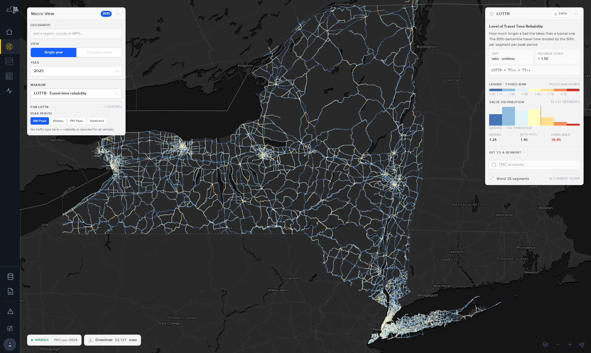
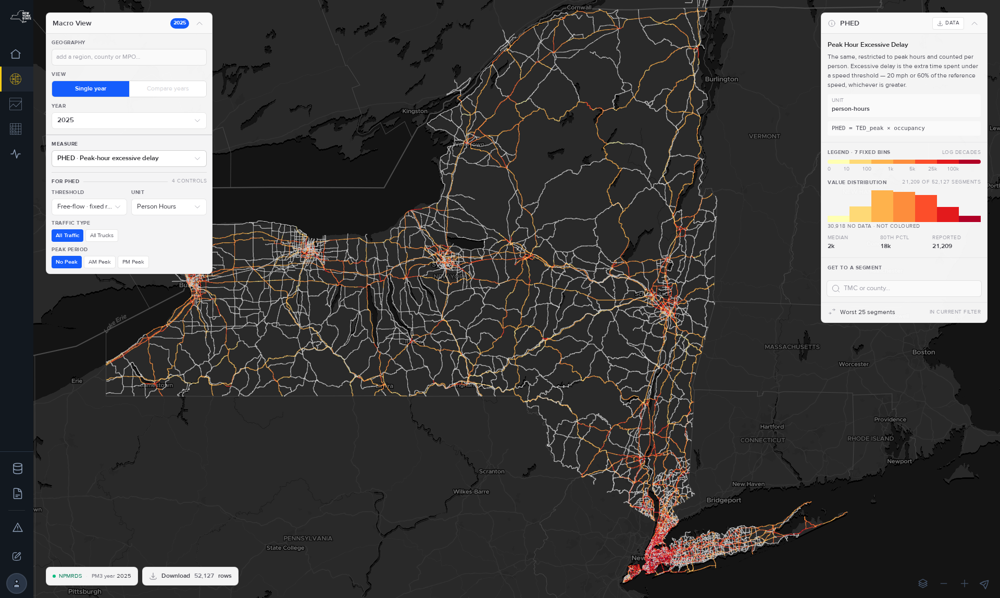
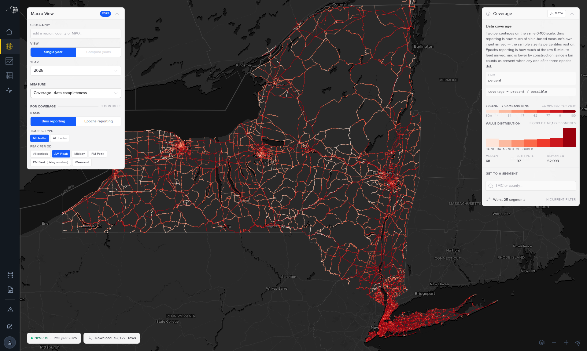
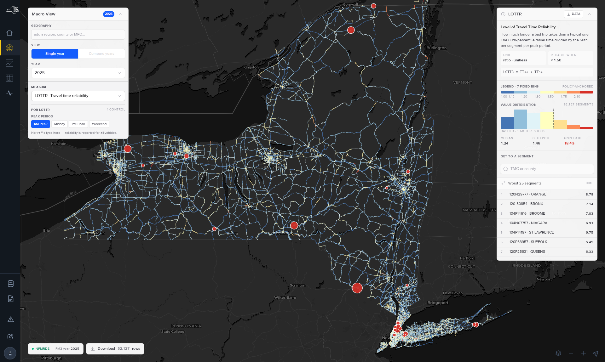
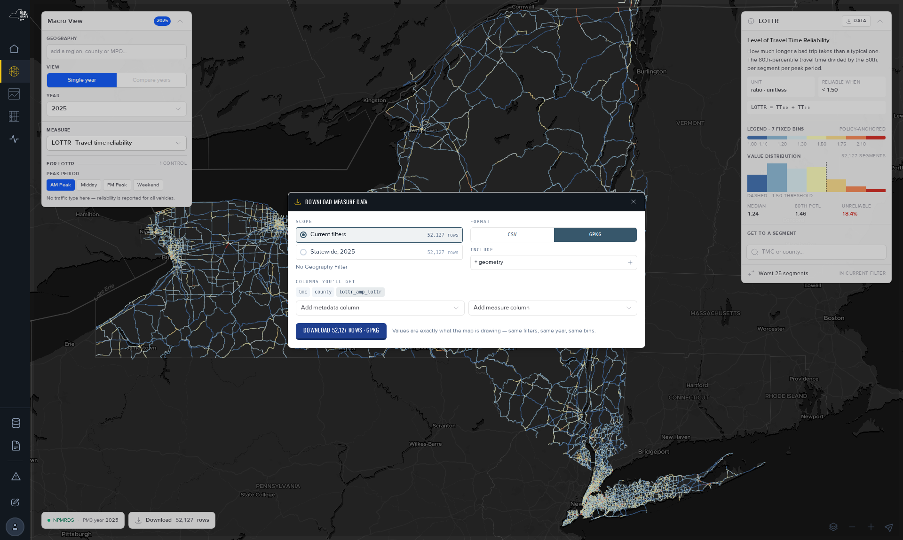

Macro View.
One map, every segment in the state, one measure at a time. The macro view is where an analysis starts: rank a region, see where a measure is worst, and export exactly what the map is drawing. This page walks the whole tool, in the order you would actually use it.
What the macro view is for
It answers “where is this measure worst, across a whole region?” — and it is the fastest way to export a measure for every segment in a geography. It is a starting point, not a finishing one: once you know which segments matter, the other tools go deeper.

| if you want to… | use |
|---|---|
| Rank or compare every segment in a region | Macro view — you are in the right place |
| Study one corridor over time, in detail | Reports — build a route, then chart it |
| Compare two or more routes side by side | Route comparison |
| Look at one segment in full | Segment · TMC |
| Report a figure to FHWA | MAP-21 pages — not this tool |
The control model — the one thing to understand
Pick the measure first. The controls below it then change. Every measure declares which reference controls apply to it, so the panel is never showing you a control that does nothing.
The panel tells you how many are in play — note the count under the measure select.


Delay needs traffic volume and a speed reference, and a large share of the network has neither. Those segments are not coloured rather than coloured zero — an absent measure and a measure of zero are different claims, and the map keeps them different. Check the “no data” count in the right panel before reading a delay map as coverage of the whole state.
Geography and year
Type into add a region, county or MPO to filter. Leave it empty and you get the whole state — which is the right choice when you want the statewide distribution behind the legend. Adding a geography narrows the map, the distribution summary, the worst-segments ranking, and the download all at once.
The year list is the set of published PM3 years, not a free date range — each is a complete annual computation. Compare years sits next to Single year in the View control.
Before comparing years, read the two traps in the measures page — coverage and AADT vintage both move across years for reasons that have nothing to do with traffic. See § 05 there →
Reading the map and the right-hand panel
The right panel is the measure’s own explainer — the same definition text this documentation uses — plus the legend and the distribution of values actually on screen.
Check coverage before you trust a pattern
Coverage is a measure in the menu like any other, and it is the one worth looking at first when something surprising shows up. A region that looks unusually unreliable may simply have less data behind it.

Worst segments — ranking bottlenecks
Worst 25 segments in the right panel ranks the current measure over the current filter — the label says in current filter for exactly that reason. Set your geography first, or you will rank the whole state.

- •Short segments dominate reliability rankings. 24.3% of segments are under 0.05 mi and are flagged unreliable 7.7× more often than long ones. A top-25 by LOTTR can be mostly a list of very short segments.
- •Delay rankings favour high-volume roads by construction, since delay is multiplied by traffic. That is usually what you want — but it is not the same question as “where is traffic slowest”.
Downloading the data
The download button carries a row count so you know the size before you ask for it. What you get is exactly what the map is drawing — same filters, same year, same bins.

CSV for spreadsheets and analysis. GPKG when you want geometry for GIS — it carries the segment shapes, so no join to a network layer is needed.
Every download ships method notes covering precision, the delay floor, coverage, and the AADT-vintage caveat — the same facts this documentation states. If a year range straddles the 2021–22 AADT revision, the package says so.